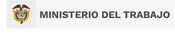
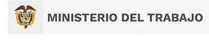
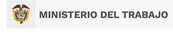
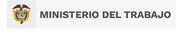

El significado de la bandera del Sena, hace referencia a la tranquilidad la paz y la libertad, ya que su color de fondo
es totalmente blanco y en el centro de ella encontramos el escudo de nuestra institución. esta bandera fue diseñada
precisamente a comienzos de la creación del Sena.